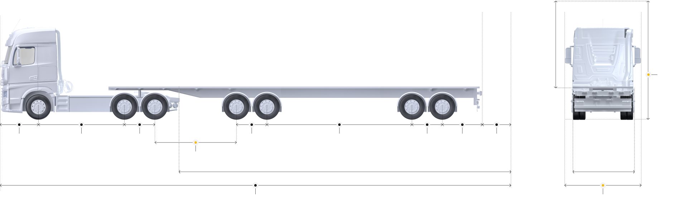

Данные о разрешении
№ Разрешения:
IR991634
Дата оформления:
27.07.2023
Уполномоченный орган:
Федеральное казенное учреждение "Центр мониторинга безопасной эксплуатации автомобильных дорог Федерального дорожного агентства"
Статус разрешения:
Выдано
Схема ТС

Ось 1
(т)
Ось 2
(т)
Ось 3
(т)
Ось 4
(т)
Ось 5
(т)
Ось 6
(т)
Ось 7
(т)
(м)
(м)
(м)
(м)
(м)
(м)
(м)
(м)
(м)
(м)
(м)
(м)
Груз 1
22 (м)
Груз 1
4.5 (м)
5 (м)
Маршрут движения
Данные по точкам
92.9 км (92.87 км), Ноябрьск, Ноябрьск - Вынгапуровский 93.2 км (0.34 км), Ноябрьск, проспект Мира 142.7 км (49.45 км), Ноябрьск, Магистральная улица 300.6 км (157.89 км), Ямало-Ненецкий автономный округ, 71-140Р-1 329.2 км (28.65 км), муниципальный округ Пуровский район, Сургут — Салехард 338.9 км (9.70 км), городской округ Губкинский, Сургут — Салехард 358.9 км (19.98 км), Ямало-Ненецкий автономный округ, 71-140Р-1 358.9 км (0.06 км), муниципальный округ Пуровский район, Сургут — Салехард 359.3 км (0.36 км), Пурпе, Сургут — Салехард 359.4 км (0.10 км), Ямало-Ненецкий автономный округ, 71-140Р-1 360.0 км (0.64 км), Пурпе, Сургут — Салехард 361.5 км (1.47 км), Ямало-Ненецкий автономный округ, 71-140Р-1 361.9 км (0.43 км), Пурпе, Сургут — Салехард 362.0 км (0.02 км), Ямало-Ненецкий автономный округ, 71-140Р-1 362.7 км (0.75 км), Пурпе, Сургут — Салехард 390.7 км (27.99 км), муниципальный округ Пуровский район, Сургут — Салехард 626.9 км (236.23 км), Ямало-Ненецкий автономный округ, 71-140Р-1 628.4 км (1.42 км), Новый Уренгой, Промысловая улица 635.0 км (6.68 км), Новый Уренгой, Крайняя улица 639.2 км (4.17 км), Новый Уренгой, Таёжная улица 643.3 км (4.07 км), Новый Уренгой, Надым — Новый Уренгой 655.5 км (12.26 км), городской округ Новый Уренгой, Надым — Новый Уренгой 741.7 км (86.15 км), муниципальный округ Надымский район, Надым — Новый Уренгой 744.4 км (2.67 км), Пангоды, Надым — Новый Уренгой 747.8 км (3.40 км), Пангоды, улица Мира 748.3 км (0.55 км), Пангоды, Надым — Новый Уренгой 812.7 км (64.41 км), муниципальный округ Надымский район, Надым — Новый Уренгой 822.3 км (9.59 км), Правохеттинский, Надым — Новый Уренгой 851.8 км (29.47 км), муниципальный округ Надымский район, Надым — Новый Уренгой 857.4 км (5.62 км), Ямало-Ненецкий автономный округ, 71-140Р-1-11 858.6 км (1.17 км), Ямало-Ненецкий автономный округ, 71-140Р-1-12 870.5 км (11.90 км), муниципальный округ Надымский район, Надым — Новый Уренгой 871.5 км (1.00 км), Надым, Надым-Салехард 879.9 км (8.42 км), муниципальный округ Надымский район, Надым-Салехард